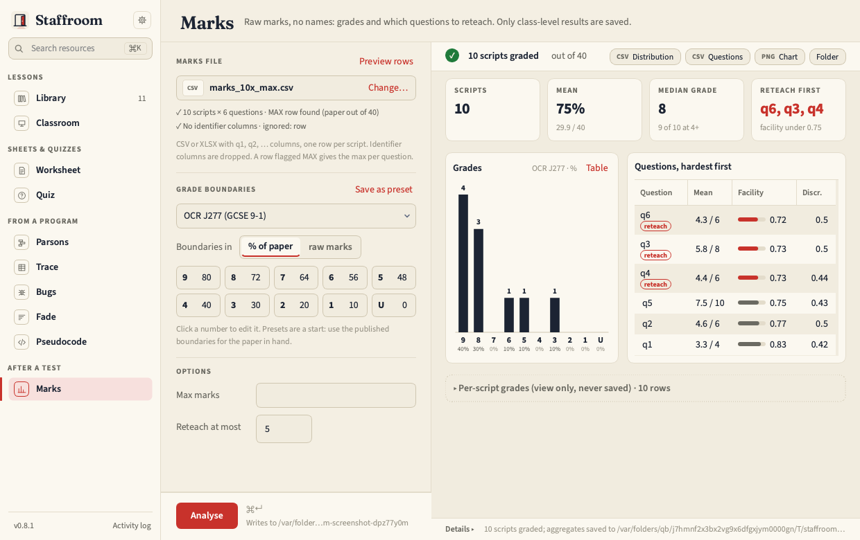
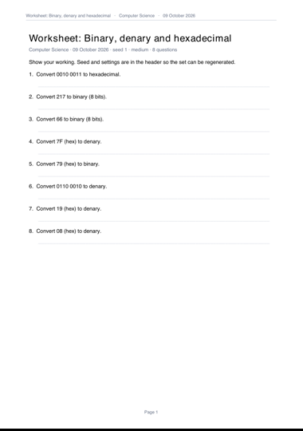
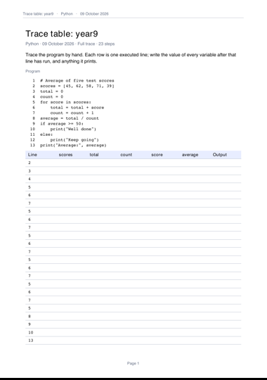

Small tools for secondary computing teachers, on your own Mac. Make a seeded binary worksheet with its key, a Parsons problem or a trace table from a program, a do-now from a question bank, and see which questions a class found hardest in a mock. Everything prints in one plain house style. No pupil names, ever.



Two lines in Terminal. The first installs uv, which fetches everything else; skip it if you have uv.
curl -LsSf https://astral.sh/uv/install.sh | sh
uv tool install --python 3.12 git+https://github.com/ColePoppleton/Staffroom@mainThen type staffroom. To update later: uv tool upgrade staffroom. Install guide · What's new
Library · Classroom · Worksheet · Quiz · Parsons · Trace · Bugs · Fade · Pseudocode · Marks
Bug reports and new tools are welcome: open an issue (please never attach a real marks file) or read the contributing guide. MIT licensed.
Small desktop tools for UK secondary computing teachers… Runs on your own Mac; no pupil data.
just setup, just install). No picture of the app or a page; uv's own install is a link away; updating says “pulls the latest code”.